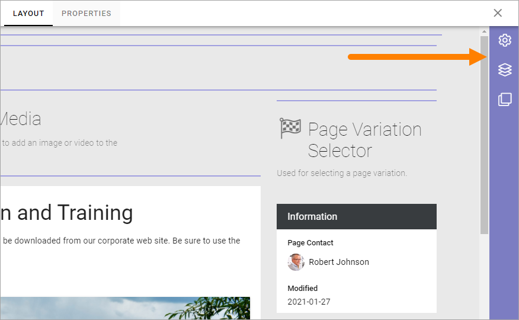

Layout Explorer¶
The Layout Explorer can be used when creating or editing a Page Type or when editing pages. Regarding Pages, it’s available when editing a page in Design Mode.
The following options are found in Layout Explorer. Select page for more information: